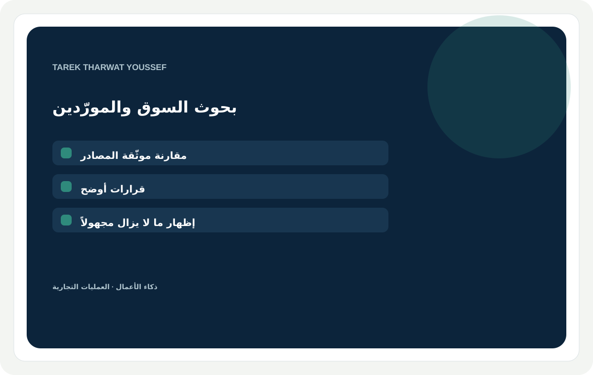
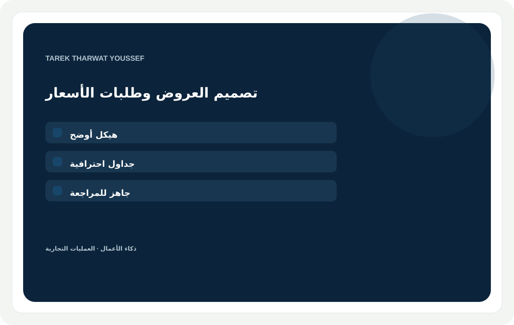
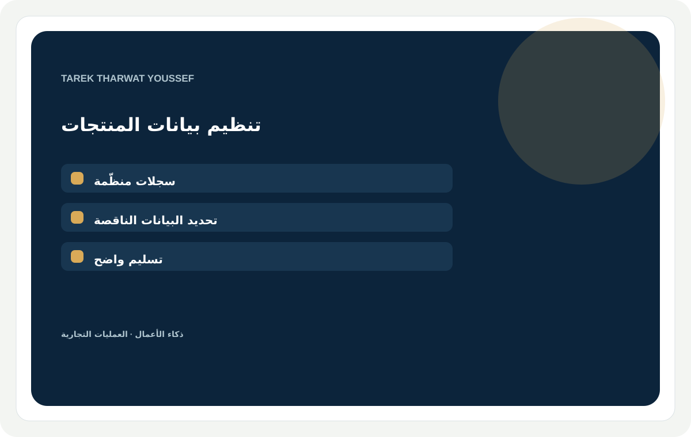

خدمات مقترحة · قيد المراجعة
عمل واضح ومفيد وتسليم محدد.
تحوّل هذه الخدمات نماذج العمل الأقوى إلى مخرجات محددة للعملاء. نطاقات الباقات وتقديرات الوقت ما زالت مسودات أولية.

بحوث السوق والمنافسين والمورّدين
أبحث سوقك أو منافسيك أو مورّديك، وأقدّم تقريراً يساعدك على اتخاذ القرار.
مقارنات موثّقة تميّز بوضوح بين الأدلة والتقديرات والأسئلة المفتوحة.
العميل المناسبفرق دخول الأسواق ومؤسسو الشركات الصغيرة والمتوسطة والمصدّرون والمشترون الذين يحتاجون إلى مقارنة محددة.
ما يثبت الخبرةهيكل توثيق EEMEI ونماذج من البحوث التجارية، مع عينة حديثة محدودة من مصادر عامة.
أساسيةسؤال تجاري واحد · ثلاثة أطراف · ستة حقول متفق عليها · مقارنة مرتبطة بالمصادر · موجز من صفحتين
قياسيةسوق أو فئة واحدة · خمسة أطراف · عشرة حقول وسجل للمصادر · موجز قرار من 4–6 صفحات · مراجعة واحدة
متقدمةشريحتان محددتان · حتى ثمانية أطراف · مقارنة وورشة قرار · أسئلة سيناريو وفحوص تالية · مراجعتان
مدة التسليم · تقدير أولي3 / 5 / 8 أيام عمل · 4–6 / 8–12 / 16–24 ساعة عمل مركّزة.
ما أحتاجه منكالقرار المطلوب، والمنتج أو الفئة، والمنطقة المستهدفة، وحقول المقارنة، والجمهور المقصود، ومصادر يحق لك مشاركتها.
أسئلة شائعةهل يمكنك التواصل مع المورّدين أو التحقق من شهاداتهم؟ تقارن الباقات الأدلة المتاحة؛ أما التواصل المباشر أو فحص الشهادات فيحتاج إلى نطاق منفصل. وهل ستوضح ما هو غير معروف؟ نعم، يميّز الموجز الحقائق الموثّقة عن الأسئلة المفتوحة.
كلمات البحثأبحاث السوق · تحليل المنافسين · أبحاث المورّدين · ذكاء السوق · تحليل التوريد
فكرة الصورة الترويجيةبطاقة بألوان الكحلي والأبيض الدافئ والأخضر البحري؛ تبرز الخبرة دون صور جاهزة.
نطاق سعري مقترحأساسية / قياسية / متقدمة: 125 / 350 / 700 دولار أمريكي. مقترح للمراجعة.

مقترحات تجارية وطلبات أسعار ووثائق أعمال
أحوّل معلومات عملك إلى مقترح تجاري أو طلب أسعار أو وثيقة أعمال احترافية.
تنظيم واضح وجداول احترافية وتسليم جاهز للمراجعة، مبني على المعلومات التي تقدمها.
العميل المناسبالشركات الصغيرة والمتوسطة وفرق المشتريات والمؤسسون والمديرون التجاريون.
ما يثبت الخبرةنماذج لهيكل مقترح ومصفوفة ردود متعددة اللغات بعد إزالة المعلومات الحساسة.
أساسيةحتى 5 صفحات مقدّمة · لغة واحدة · تنظيم وتنسيق واضح · مراجعة واحدة
قياسيةحتى 12 صفحة · جداول ومصفوفة مقارنة · ملف قابل للتحرير وPDF · مراجعة واحدة
متقدمةحتى 20 صفحة أو حزمة ثنائية اللغة معتمدة · مراجعة اتساق المصطلحات والجداول · ملفات قابلة للتحرير وPDF · مراجعتان
مدة التسليم · تقدير أولي3 / 5 / 8 أيام عمل · 4–6 / 9–14 / 18–28 ساعة عمل مركّزة.
ما أحتاجه منكالقارئ المقصود والغرض، والحقائق المصدرية، وملفات الهوية المعتمدة، واللغة والتنسيق، والمراجع النهائي، وموعد التسليم المطلوب.
أسئلة شائعةهل تعدّ توقعات مالية؟ تنظّم هذه الباقات الأرقام التي يقدّمها العميل؛ أما النمذجة المالية فهي خدمة منفصلة. وهل يمكن التسليم بأكثر من لغة؟ نعم، بعد الاتفاق منذ البداية على اللغات ومسؤوليات المراجعة.
كلمات البحثمقترح أعمال · وثيقة طلب أسعار · عرض تجاري · مقارنة مورّدين · كتابة أعمال
فكرة الصورة الترويجيةبطاقة بألوان الكحلي والأبيض الدافئ والأخضر البحري؛ تبرز الخبرة دون صور جاهزة.
نطاق سعري مقترحأساسية / قياسية / متقدمة: 175 / 450 / 850 دولاراً أمريكياً. مقترح للمراجعة.

تنظيم كتالوج المنتجات وتنقية البيانات
أنقّي كتالوج منتجاتك أو جداولك أو بيانات المورّدين وأنظّمها.
حقول متسقة وسجلات أوضح وقائمة عملية بالمعلومات الناقصة أو المتعارضة.
العميل المناسبالتجار عبر الإنترنت والموزّعون وفرق المنتجات التي تتعامل مع ملفات غير متسقة.
ما يثبت الخبرةسير عمل منظّم لتنقية الكتالوج مع تتبّع الاستثناءات ومخرجات مرتبة.
أساسيةحتى 25 سجلاً · ملف مصدر واحد · حقول أساسية متفق عليها · قائمة بالبيانات الناقصة
قياسيةحتى 100 سجل · حتى 3 ملفات متسقة · ربط الحقول ورصد التكرار · سجل استثناءات وعينة من المخرجات
متقدمةحتى 250 سجلاً · مخطط بيانات متفق عليه · ربط بالمصادر · ملف تصدير جاهز للمراجعة وتسليم واضح
مدة التسليم · تقدير أولي2 / 4 / 7 أيام عمل · 2–4 / 6–10 / 14–22 ساعة عمل مركّزة.
ما أحتاجه منكعينة ممثلة من الملفات، ومخطط البيانات المطلوب، وعدد السجلات، والمنصة أو صيغة التصدير، وقواعد المصطلحات، وإذن مشاركة الملفات.
أسئلة شائعةهل تنشئ مواصفات المنتجات الناقصة؟ لا؛ أحدد الحقول التي يحتاج فريقك إلى استكمالها. وهل أتعامل مع ملفات ممسوحة أو جداول قديمة؟ أرسل عينة لفحص النطاق قبل الطلب.
كلمات البحثتنقية كتالوج المنتجات · تنقية الجداول · تنظيم بيانات المنتجات · بيانات الموردين · توحيد البيانات
فكرة الصورة الترويجيةبطاقة بألوان الكحلي والأبيض الدافئ والأخضر البحري؛ تبرز الخبرة دون صور جاهزة.
نطاق سعري مقترحأساسية / قياسية / متقدمة: 75 / 225 / 500 دولار أمريكي. مقترح للمراجعة.